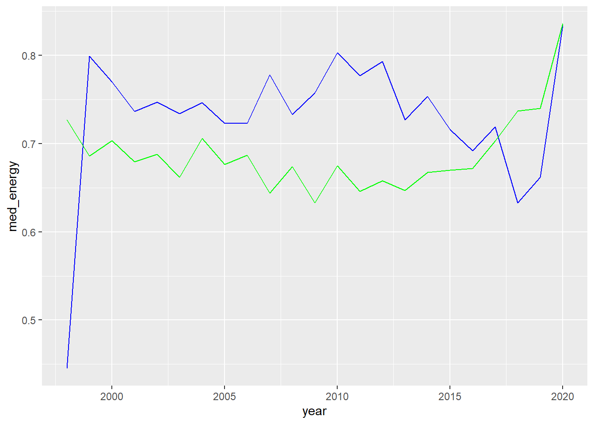

Dplyr TP3
Before starting the exercise, we must define our directory, call all the libraries used during our lab, and attribute the data set we have downloaded to the variable “spotify”.
The repository link is : https://github.com/GhinaMezher/dplyr-tp3.git
Exercise 1
Question 1
The data set contains 1879 songs, 835 artists and 59 genres.
Question 2
| year | Number of songs |
|---|---|
| 1998 | 1 |
| 1999 | 38 |
| 2000 | 71 |
| 2001 | 106 |
| 2002 | 85 |
| 2003 | 91 |
| 2004 | 94 |
| 2005 | 101 |
| 2006 | 93 |
| 2007 | 90 |
| 2008 | 91 |
| 2009 | 82 |
| 2010 | 101 |
| 2011 | 96 |
| 2012 | 112 |
| 2013 | 86 |
| 2014 | 98 |
| 2015 | 91 |
| 2016 | 95 |
| 2017 | 110 |
| 2018 | 104 |
| 2019 | 89 |
| 2020 | 3 |
The table here gives us the number of songs for each year. The function count helps us get rid of duplicates.
Question 3
# A tibble: 1 × 2
artist n
<chr> <int>
1 Rihanna 23The artist with the largest amount of songs in the database (Tuesday’s database) is Rihanna with 23 songs. the function count(artist) helps us count each song once and not get confused with duplicates on the chart.
Question 4
| genre | mean(tempo) | median(tempo) | max(tempo) | min(tempo) | n() |
|---|---|---|---|---|---|
| Dance/Electronic | 125.5075 | 126.0410 | 179.642 | 75.255 | 41 |
| Folk/Acoustic, pop | 111.9380 | 111.9380 | 128.945 | 94.931 | 2 |
| Folk/Acoustic, rock | 84.1920 | 84.1920 | 84.192 | 84.192 | 1 |
| Folk/Acoustic, rock, pop | 138.5850 | 138.5850 | 138.585 | 138.585 | 1 |
| R&B | 106.9248 | 100.4600 | 170.661 | 71.815 | 13 |
| World/Traditional, Folk/Acoustic | 82.8030 | 82.8030 | 82.803 | 82.803 | 1 |
| World/Traditional, hip hop | 100.0350 | 100.0350 | 101.993 | 98.077 | 2 |
| World/Traditional, pop | 108.1020 | 108.1020 | 108.102 | 108.102 | 1 |
| World/Traditional, pop, Folk/Acoustic | 102.6065 | 102.6065 | 104.833 | 100.380 | 2 |
| World/Traditional, rock | 118.0415 | 118.0415 | 140.083 | 96.000 | 2 |
| World/Traditional, rock, pop | 135.5305 | 135.5305 | 139.048 | 132.013 | 2 |
| country | 138.1508 | 136.0020 | 205.570 | 103.055 | 9 |
| country, latin | 96.0550 | 96.0550 | 96.055 | 96.055 | 1 |
| easy listening | 157.9200 | 157.9200 | 157.920 | 157.920 | 1 |
| hip hop | 116.9894 | 111.6795 | 179.974 | 64.934 | 120 |
| hip hop, Dance/Electronic | 135.4297 | 131.0500 | 190.151 | 95.948 | 15 |
| hip hop, R&B | 121.1220 | 111.9700 | 151.181 | 100.215 | 3 |
| hip hop, country | 97.9840 | 97.9840 | 97.984 | 97.984 | 1 |
| hip hop, latin, Dance/Electronic | 171.9930 | 171.9930 | 171.993 | 171.993 | 1 |
| hip hop, pop | 118.9619 | 119.9750 | 203.911 | 73.003 | 265 |
| hip hop, pop, Dance/Electronic | 120.8555 | 126.0620 | 196.093 | 72.022 | 75 |
| hip hop, pop, R&B | 115.2649 | 107.3310 | 203.862 | 60.019 | 235 |
| hip hop, pop, R&B, Dance/Electronic | 103.9113 | 101.0130 | 127.901 | 82.820 | 3 |
| hip hop, pop, R&B, latin | 91.1705 | 91.1705 | 100.010 | 82.331 | 2 |
| hip hop, pop, country | 129.3700 | 129.3700 | 129.370 | 129.370 | 1 |
| hip hop, pop, latin | 127.2119 | 127.0265 | 180.184 | 89.661 | 14 |
| hip hop, pop, rock | 123.1123 | 125.2500 | 179.999 | 84.858 | 9 |
| hip hop, rock, pop | 90.0520 | 90.0520 | 90.052 | 90.052 | 1 |
| latin | 121.6049 | 97.0620 | 198.075 | 90.013 | 15 |
| metal | 106.2089 | 101.9680 | 147.387 | 79.012 | 9 |
| pop | 120.7527 | 119.9535 | 195.685 | 65.043 | 412 |
| pop, Dance/Electronic | 123.4655 | 124.0595 | 198.065 | 84.878 | 216 |
| pop, Folk/Acoustic | 118.3595 | 109.9505 | 171.790 | 76.026 | 8 |
| pop, R&B | 117.4385 | 112.5110 | 210.851 | 68.942 | 172 |
| pop, R&B, Dance/Electronic | 112.0338 | 104.0865 | 176.051 | 84.021 | 6 |
| pop, R&B, easy listening | 108.9840 | 108.9840 | 108.984 | 108.984 | 1 |
| pop, country | 130.5087 | 136.9250 | 147.905 | 97.865 | 8 |
| pop, easy listening, Dance/Electronic | 135.0990 | 135.0990 | 135.099 | 135.099 | 1 |
| pop, easy listening, jazz | 104.9995 | 104.9995 | 127.831 | 82.168 | 2 |
| pop, latin | 113.5903 | 104.2540 | 177.833 | 79.997 | 28 |
| pop, rock | 121.0976 | 119.0095 | 176.667 | 77.967 | 26 |
| pop, rock, Dance/Electronic | 133.9808 | 135.9875 | 189.857 | 87.016 | 12 |
| pop, rock, Folk/Acoustic | 107.9605 | 107.9605 | 112.960 | 102.961 | 2 |
| pop, rock, metal | 128.9358 | 134.7165 | 155.827 | 82.952 | 14 |
| rock | 129.5312 | 123.6960 | 199.935 | 74.989 | 57 |
| rock, Dance/Electronic | 127.9880 | 127.9880 | 127.988 | 127.988 | 1 |
| rock, Folk/Acoustic, easy listening | 122.9790 | 122.9790 | 122.979 | 122.979 | 1 |
| rock, Folk/Acoustic, pop | 80.5290 | 80.5290 | 80.529 | 80.529 | 1 |
| rock, R&B, Folk/Acoustic, pop | 105.9870 | 105.9870 | 105.987 | 105.987 | 1 |
| rock, blues | 132.9185 | 132.9185 | 141.933 | 123.904 | 2 |
| rock, blues, latin | 112.9460 | 112.9460 | 127.981 | 97.911 | 2 |
| rock, classical | 81.6630 | 81.6630 | 81.663 | 81.663 | 1 |
| rock, easy listening | 114.9990 | 114.9990 | 114.999 | 114.999 | 1 |
| rock, metal | 127.3922 | 120.0555 | 187.961 | 89.342 | 36 |
| rock, pop | 123.8996 | 124.9700 | 184.086 | 68.976 | 39 |
| rock, pop, Dance/Electronic | 135.7678 | 127.4480 | 181.994 | 113.049 | 8 |
| rock, pop, metal | 140.2785 | 141.4825 | 152.034 | 126.115 | 4 |
| rock, pop, metal, Dance/Electronic | 105.0130 | 105.0130 | 105.013 | 105.013 | 1 |
| set() | 120.1329 | 126.9620 | 184.819 | 68.507 | 22 |
The table here shows us the minimum, maximum, mean and median bpm and the number of songs according to the musical genre.
The function group_by(genre) helps us group the values for the avraibles we have selected (with distinct) according to the musical genre. Summarise calculates the values we want to put into our table and knitr::kable(c) takes the summarise values (implemented into the c variable) and puts them in a clean and clear teable.
Question 5
| year | median(energy) | median(danceability) |
|---|---|---|
| 1998 | 0.4450 | 0.7270 |
| 1999 | 0.7990 | 0.6860 |
| 2000 | 0.7720 | 0.7080 |
| 2001 | 0.7390 | 0.6795 |
| 2002 | 0.7470 | 0.6940 |
| 2003 | 0.7350 | 0.6630 |
| 2004 | 0.7465 | 0.7060 |
| 2005 | 0.7320 | 0.6780 |
| 2006 | 0.7230 | 0.6870 |
| 2007 | 0.7780 | 0.6385 |
| 2008 | 0.7400 | 0.6735 |
| 2009 | 0.7575 | 0.6305 |
| 2010 | 0.8115 | 0.6735 |
| 2011 | 0.7800 | 0.6450 |
| 2012 | 0.8075 | 0.6580 |
| 2013 | 0.7280 | 0.6470 |
| 2014 | 0.7475 | 0.6785 |
| 2015 | 0.7170 | 0.6670 |
| 2016 | 0.6960 | 0.6715 |
| 2017 | 0.7180 | 0.7030 |
| 2018 | 0.6345 | 0.7385 |
| 2019 | 0.6620 | 0.7400 |
| 2020 | 0.8340 | 0.8360 |
This table represents the median energy and danceability of songs for each year mentioned in our database. group_by(year) groups the values of each variable for each year in order to calculate the statistical values requested for each year.
Question 6

On this graph we can read the evolution of the median energy of songs in blue and in green the evolution of the median danceability of songs.
Exercise 2
Question 1
`summarise()` has grouped output by 'Marital status'. You can override using
the `.groups` argument.# A tibble: 12 × 3
# Groups: Marital status [6]
`Marital status` Gender `Median age`
<fct> <fct> <dbl>
1 single Male 36.5
2 single Female 35
3 married Male 39
4 married Female 36
5 divorced Male 44
6 divorced Female 37.5
7 widower Male 43
8 widower Female 34
9 facto union Male 32
10 facto union Female 29
11 legally separated Male 55
12 legally separated Female 41 This table represents the median age at enrollment according to the gender and marital status of the students in our database.
Question 2
`summarise()` has grouped output by 'Marital status'. You can override using
the `.groups` argument.| Marital status | Male | Female |
|---|---|---|
| single | 36.5 | 35.0 |
| married | 39.0 | 36.0 |
| divorced | 44.0 | 37.5 |
| widower | 43.0 | 34.0 |
| facto union | 32.0 | 29.0 |
| legally separated | 55.0 | 41.0 |
Here we have a clearer representation of the previous table. For each marital status we can read the median age at enrollment for women and for men. This is possible thanks to the function pivot_wider.
Question 3
# A tibble: 3 × 13
Target Curricular units 1st …¹ Curricular units 1st…² Curricular units 1st…³
<fct> <dbl> <dbl> <dbl>
1 Dropout 0.609 5.82 7.75
2 Graduate 0.847 6.67 8.28
3 Enrolled 0.508 5.96 9.34
# ℹ abbreviated names: ¹`Curricular units 1st sem (credited)`,
# ²`Curricular units 1st sem (enrolled)`,
# ³`Curricular units 1st sem (evaluations)`
# ℹ 9 more variables: `Curricular units 1st sem (approved)` <dbl>,
# `Curricular units 1st sem (grade)` <dbl>,
# `Curricular units 1st sem (without evaluations)` <dbl>,
# `Curricular units 2nd sem (credited)` <dbl>, …It is too long to type all variables concerning the Curricular units. By using the across function we are able to include more than one variable without typing them out one by one by sifting through all the variables of the database. Starts_with helps us give a selection to the selection of variables by across, here the condition is starting with ‘Curricular units’.
We could also attribute the code to a variable, mean_val and then do print(mean_val) in order to reuse it in the rest of our code without typing the question 3 code all over again.
So we would have : mean_val<-dropout|> … and then print(mean_val) on the next line
Question 4
| Units | Dropout | Graduate | Enrolled |
|---|---|---|---|
| Curricular units 1st sem (credited) | 0.6094300 | 0.8474423 | 0.5075567 |
| Curricular units 1st sem (enrolled) | 5.8212526 | 6.6695337 | 5.9647355 |
| Curricular units 1st sem (evaluations) | 7.7515834 | 8.2765957 | 9.3413098 |
| Curricular units 1st sem (approved) | 2.5517241 | 6.2322318 | 4.3186398 |
| Curricular units 1st sem (grade) | 7.2566555 | 12.6436545 | 11.1252573 |
| Curricular units 1st sem (without evaluations) | 0.1921182 | 0.0882752 | 0.1775819 |
| Curricular units 2nd sem (credited) | 0.4496833 | 0.6668176 | 0.3589421 |
| Curricular units 2nd sem (enrolled) | 5.7804363 | 6.6283386 | 5.9382872 |
| Curricular units 2nd sem (evaluations) | 7.1738213 | 8.1421458 | 9.4357683 |
| Curricular units 2nd sem (approved) | 1.9401830 | 6.1770032 | 4.0579345 |
| Curricular units 2nd sem (grade) | 5.8993389 | 12.6972758 | 11.1173643 |
| Curricular units 2nd sem (without evaluations) | 0.2378607 | 0.0805794 | 0.1876574 |
The functions pivot_longer and pivot_wider help us organize our table in order to better visualize our data. Pivot_wider gives us a table with 3 columns; Target, Units and value. Pivot_longer makes the table more readable as each line represents a certain unit. And each unit line has 3 values, one for each type of target (dropout, graduate and enrolled)